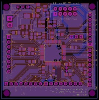

I made this board by reviewing the schematic for the Sam4s xplained pro board as well as reading the sam4s schematic check list from Atmel. This board does not have as many features as the xplained pro, but it's very compact. It has a 3.3v LDO, power switch, power indicator LED, JTAG connector (2.54 pitch), pull up resistors for I2C, and space for your 3-20mhz and 32.768khz crystals. The next version will use a 1.27mm pitch JTAG headers instead of 2.54mm pitch so that the Atmel-Ice programmer can directly connect to it without the adapter. The board has the LDO AZ1117CH-3.3TRG1 and will accept a voltage up to 15V and has a drop out voltage of 1.2v @ 800ma. I find 4 rechargeable batteries is sufficient. If you go higher, just make sure you have proper heat sinking.
Click image to download. If you need a gerber viewer I recommend gerbv. It's free!
Currently, I have several left over PCBS. If you want me to mail you one then just send me a request. I am making a second version soon and I would suggest waiting for that.
-Order Here-They come in packs of 10 +/- 1 and cost $14 with free shipping. Feel free to submit the gerbers to another PCB fab that you prefer. I don't make any money off the sale of these boards. I will be making a second version of this board that will include USB, 1.27mm pitch jtag header, pins in order, and advref connected to a voltage reference (whoops), and more outputs for vcc and ground to connect to a breadboard.
{kind=link}
{kind=link}